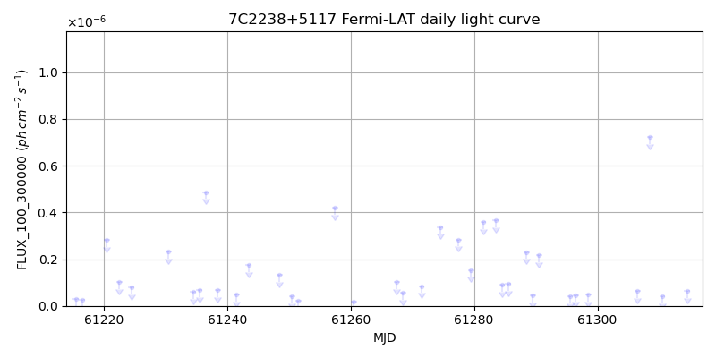
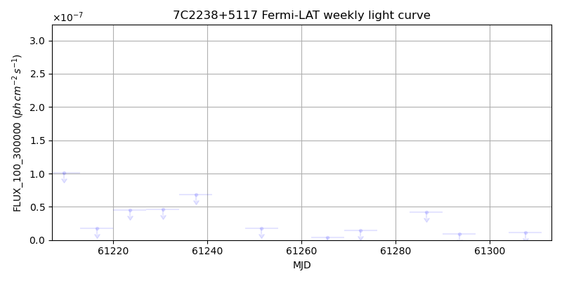
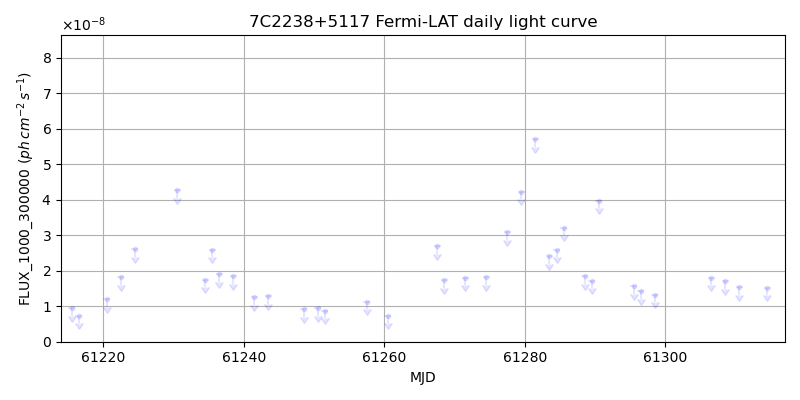
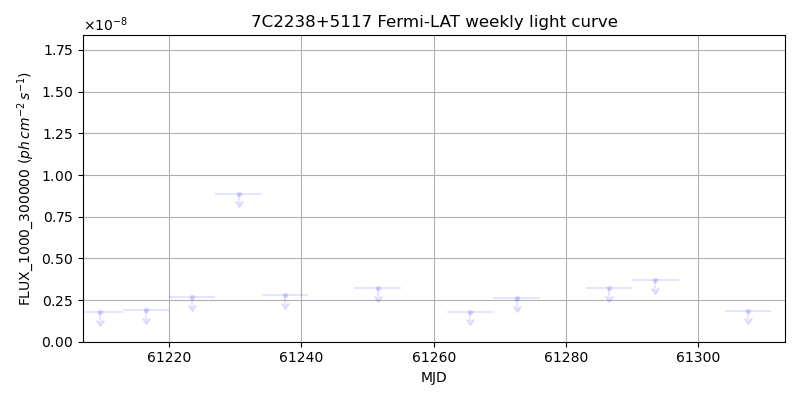

LAT Lightcurve site: https://fermi.gsfc.nasa.gov/ssc/data/access/lat/msl_lc/source/7C_2238p5117
NED: Query
Time of last update of this page: UT: 2026-10-10 15:30 (MJD: 61323.646)
| Property | Value |
|---|---|
| R.A. | 22:40:19.92 |
| Dec. | 51:33:10.8 |
| z | 0.000 |
| 3FGL SpectrumType | |
| 3FGL PL Index | -1.00 |
| 3FGL Flux_100_300000 | -1.00e+00 |
| 3FGL Flux_1000_300000 | -1.00e+00 |
| 3FGL Flux >200 GeV | -1.00e+00 |
| 3FGL Extrap. Crab >200 GeV | -1.00 |
| 3FGL Flux After EBL Absorption >200GeV | -1.00e+00 |
| 3FGL EBL Crab Fraction >200GeV | -1.00 |

| MJD | dMJD | Flux | dFlux | Frac3FGL | FracCrab>200GeV | EBLFracCrab>200GeV |
|---|---|---|---|---|---|---|
| 61314.50 | 0.50 | 6.43e-08 | 0.00e+00 | 0.00 | 0.00 | -0.00 |
| 61315.50 | 0.50 | 7.78e-08 | 0.00e+00 | 0.00 | 0.00 | -0.00 |
| 61317.50 | 0.50 | 3.23e-07 | 0.00e+00 | 0.00 | 0.00 | -0.00 |
| 61320.50 | 0.50 | 4.86e-08 | 0.00e+00 | 0.00 | 0.00 | -0.00 |
| 61322.50 | 0.50 | 6.41e-08 | 0.00e+00 | 0.00 | 0.00 | -0.00 |

| MJD | dMJD | Flux | dFlux | Frac3FGL | FracCrab>200GeV | EBLFracCrab>200GeV |
|---|---|---|---|---|---|---|
| 61272.50 | 3.50 | 1.45e-08 | 0.00e+00 | 0.00 | 0.00 | -0.00 |
| 61279.50 | 3.50 | 7.79e-07 | 0.00e+00 | 0.00 | 0.00 | -0.00 |
| 61286.50 | 3.50 | 4.18e-08 | 0.00e+00 | 0.00 | 0.00 | -0.00 |
| 61293.50 | 3.50 | 9.21e-09 | 0.00e+00 | 0.00 | 0.00 | -0.00 |
| 61307.50 | 3.50 | 1.09e-08 | 0.00e+00 | 0.00 | 0.00 | -0.00 |

| MJD | dMJD | Flux | dFlux | Frac3FGL | FracCrab>200GeV | EBLFracCrab>200GeV |
|---|---|---|---|---|---|---|
| 61314.50 | 0.50 | 1.52e-08 | 0.00e+00 | 0.00 | 0.00 | -0.00 |
| 61315.50 | 0.50 | 1.26e-08 | 0.00e+00 | 0.00 | 0.00 | -0.00 |
| 61317.50 | 0.50 | 1.37e-08 | 0.00e+00 | 0.00 | 0.00 | -0.00 |
| 61320.50 | 0.50 | 2.40e-08 | 0.00e+00 | 0.00 | 0.00 | -0.00 |
| 61322.50 | 0.50 | 2.70e-08 | 0.00e+00 | 0.00 | 0.00 | -0.00 |

| MJD | dMJD | Flux | dFlux | Frac3FGL | FracCrab>200GeV | EBLFracCrab>200GeV |
|---|---|---|---|---|---|---|
| 61272.50 | 3.50 | 2.61e-09 | 0.00e+00 | 0.00 | 0.00 | -0.00 |
| 61279.50 | 3.50 | 5.68e-08 | 0.00e+00 | 0.00 | 0.00 | -0.00 |
| 61286.50 | 3.50 | 3.23e-09 | 0.00e+00 | 0.00 | 0.00 | -0.00 |
| 61293.50 | 3.50 | 3.68e-09 | 0.00e+00 | 0.00 | 0.00 | -0.00 |
| 61307.50 | 3.50 | 1.87e-09 | 0.00e+00 | 0.00 | 0.00 | -0.00 |
--------------------------------------------------------- Using user-supplied coords: 22:40:19.92 51:33:10.8 2000 --------------------------------------------------------- FLWO UT night of: 2026-10-11 Local Sid. @ Midnight: 00:55 Sunset (-15.0) (local, UT): 19:04 02:04 Sunrise (-15.0) (local, UT): 05:18 12:18 Moonrise (local, UT): Moonset (local, UT): Moon phase: 0.01 --------------------------------------------------------- AzTime LSID UT Obj_el Obj_az Mn_el Mn_az Sep. --------------------------------------------------------- 19:04 19:58 02:04 54.3 43.8 -16.1 264.2 130.7 19:34 20:29 02:34 58.7 40.6 -22.3 267.8 130.6 20:04 20:59 03:04 62.6 35.6 -28.5 271.5 130.6 20:34 21:29 03:34 66.0 28.2 -34.7 275.4 130.5 21:04 21:59 04:04 68.5 18.1 -40.8 279.7 130.4 21:34 22:29 04:34 69.9 5.4 -46.8 284.6 130.3 22:04 22:59 05:04 69.7 351.9 -52.7 290.5 130.2 22:34 23:29 05:34 68.1 339.7 -58.4 297.7 130.1 23:04 23:59 06:04 65.4 330.1 -63.6 307.3 130.1 23:34 00:29 06:34 61.9 323.3 -68.1 320.3 130.0 00:04 00:59 07:04 57.8 318.7 -71.3 338.2 129.9 00:34 01:29 07:34 53.5 315.7 -72.6 0.4 129.8 01:04 01:59 08:04 48.9 314.1 -71.5 22.7 129.7 01:34 02:30 08:34 44.3 313.3 -68.3 40.8 129.6 02:04 03:00 09:04 39.6 313.3 -63.9 54.1 129.5 02:34 03:30 09:34 35.0 313.9 -58.7 63.8 129.4 03:04 04:00 10:04 30.4 315.0 -53.1 71.2 129.3 03:34 04:30 10:34 26.0 316.5 -47.3 77.2 129.3 04:04 05:00 11:04 21.7 318.4 -41.4 82.2 129.2 04:34 05:30 11:34 17.5 320.6 -35.3 86.6 129.1 05:04 06:00 12:04 13.6 323.1 -29.2 90.6 129.1 05:18 06:14 12:18 11.9 324.4 -26.5 92.4 129.0 --------------------------------------------------------- Dark hours >55 deg.: 5.25 srcstart (UT): 2026-10-11 02:08 srcend (UT): 2026-10-11 07:23